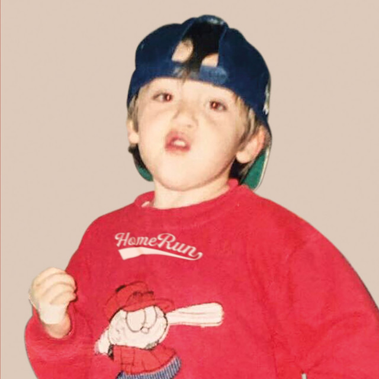
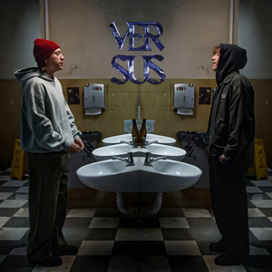

Álbum debut lanzado en mayo de 2019. Incluye Adán y Eva, Forever Alone, Tal Vez y Ella. Llegó al #12 en Billboard Top Latin Albums y vendió más de 185,000 copias en EE.UU.
Segundo álbum lanzado en noviembre de 2022 tras su regreso. Incluye Plan A, Nublado y más. Elegido uno de los mejores discos latinos del año por Billboard.

EP de trap lanzado en 2024. Representa el regreso de Paulo al género con el que comenzó su carrera. Una colección de tracks cargados de flow y letras auténticas.